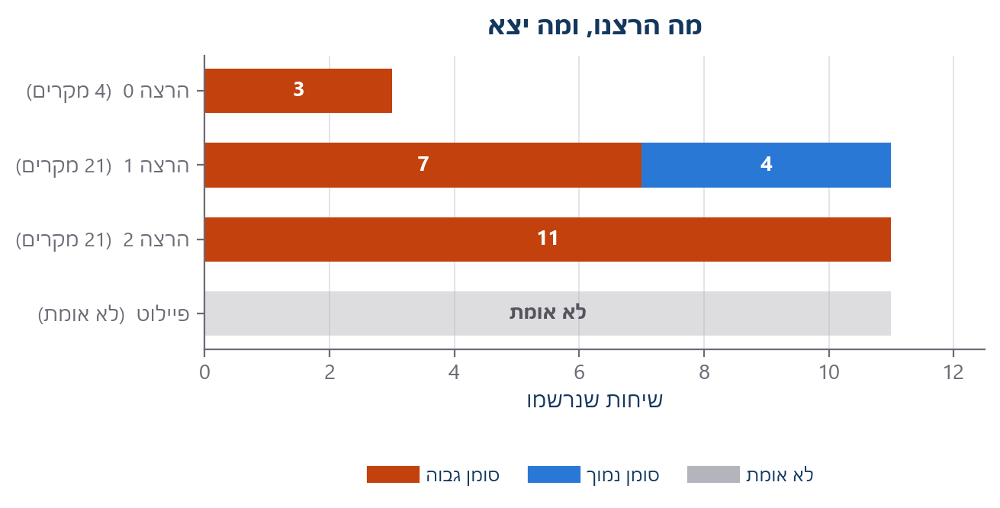
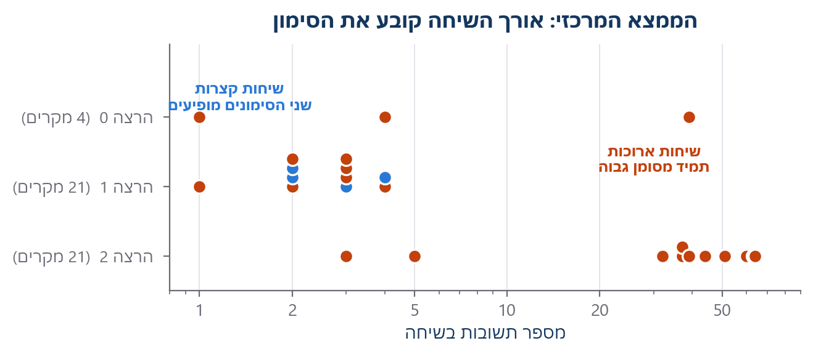
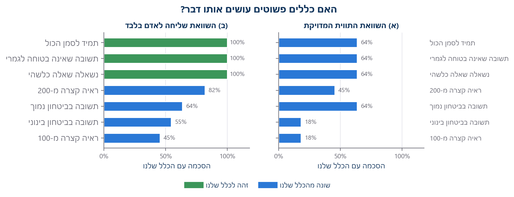
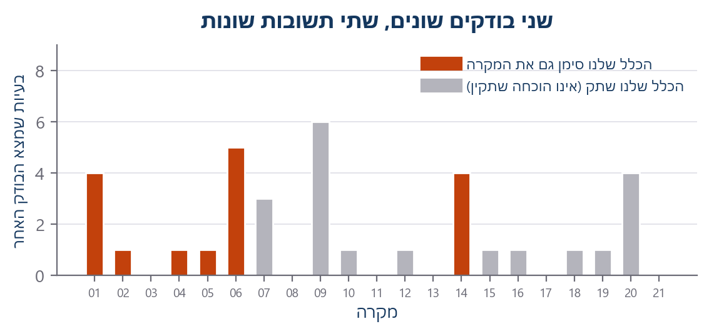

האם כלל פשוט יכול לבחור אילו שיחות של סוכני בינה מלאכותית אדם צריך לבדוק?
VEGO-AI · מחקר 1 · סיכום בשפה פשוטה של כל מה שהרצנו
למה עשינו את זה
כמה סוכני בינה מלאכותית מדברים ביניהם כדי לבנות מודל. לפעמים סוכן אינו בטוח. אנחנו רוצים לדעת: האם כלל אוטומטי יכול לבחור את השיחות שאדם צריך להסתכל עליהן, כדי שאדם לא יצטרך לקרוא את כולן?
איך זה עובד, מקצה לקצה
1נתונים ציבוריים
21 מקרי תעופה
המילים שאנחנו משתמשים בהן, בשפה פשוטה
שיחהסוכן אחד שואל, אחר עונה, עד שמפסיקים. הקלטנו 25.
הכללבדיקה קבועה שנכתבה לפני שראינו תוצאה כלשהי. היא מעולם לא שונתה.
סימון גבוההכלל אומר שאדם צריך להסתכל. זה אינו אומר שיש שגיאה.
סימון נמוךאות חלש יותר. עדיין נשלח לאדם.
קו בסיסכלל פשוט מאוד שמשווים אליו, כדי לראות אם שלנו מוסיף משהו.
לא אומתאי אפשר להוכיח מהקבצים שפורסמו, ולכן איננו מדווחים על כך.
מה הרצנו

שלוש הרצות שניתן לאמת. כל עמודה היא הרצה; כל מקטע הוא שיחה אחת. העמודה האפורה היא פיילוט שאי אפשר לאמת מהקבצים שפורסמו, ולכן אין עבורו מספרים.
הממצא המרכזי

כל נקודה היא שיחה אחת. שיחות קצרות מקבלות את שני הסימונים. שיחות ארוכות תמיד מסומנות גבוה. באורך השיחה לא שלטנו - הוא יצא שונה בכל הרצה.
מה בנינו ומה תיקנו
השתמשנו בכל המקריםכל 21 המקרים, כדי שאיש לא ישאל למה בחרנו דווקא אלה.
בדקנו שהנתונים אמיתייםהורדנו מחדש; כל קובץ התאים לטביעת האצבע שלו בדיוק.
תיעדנו כל קריאהכדי שאפשר יהיה לבדוק את העלות, לא רק להאמין לה.
ביטלנו ניסיונות חוזרים שקטיםכדי שמגבלת ההוצאה תספור קריאות אמיתיות.
השווינו בשתי דרכיםכך מצאנו טענה שלנו שהייתה שגויה.
הסרנו תוצאה לא מוכחתפיילוט שאי אפשר לאמת הוצא מהדוח.
כל מספר כאן מחושב מחדש מההקלטות השמורות. הכלל מעולם לא שונה.
קווי הבסיס - הבדיקה החשובה ביותר

השווינו את הכלל שלנו לכללים פשוטים מאוד. מימין (א): האם הכלל הפשוט נותן בדיוק את אותה תווית? משמאל (ב): האם הוא שולח את אותן שיחות לאדם?
- לוח ימין (א): אף כלל פשוט אינו נותן את אותה תווית מדויקת כמו שלנו.
- לוח שמאל (ב): ״תמיד לסמן הכול״ שולח בדיוק את אותן שיחות לאדם - 100%.
- כלומר הכלל שלנו נראה שונה רק כשמשווים תוויות, ולא כשמשווים מי נשלח לאדם.
שני בודקים, שתי תשובות

במערכת כבר יש בודק אחר שמסתכל על משפטים בודדים. הוא מצא בעיות במקרים שבהם הכלל שלנו שתק. אף אחד מהם אינו האמת - הם מסתכלים על דברים שונים.
מה אפשר לומר · מה אי אפשר לומר
מה אפשר לומר
- הצינור רץ מקצה לקצה; הכול נרשם ומאומת בגיבוב.
- שיחות ארוכות כמעט תמיד מסומנות גבוה. כך הכלל בנוי.
- ברמת ״שליחה לאדם״, כלל שמסמן הכול עושה את אותו דבר כמו שלנו.
- העלות נמוכה: 1.96$ לשלוש ההרצות.
מה אי אפשר לומר
- אי אפשר לומר שסימון היה נכון. איש עדיין לא שפט את השיחות.
- אי אפשר לומר שזה חוסך עבודה. איש לא מדד זמן בדיקה.
- אין דיוק, אין תועלת, ואין השוואה למערכות אחרות.
- הרצת הפיילוט אינה מאומתת, ולכן אינה נספרת בשום מקום.
מעמד נוכחי
תיאור התנהגות הכלל בלבד - לא בשל למסקנה מדעית
השלב הבא: שני אנשים עצמאיים ידרגו את השיחות בלי לראות את הסימון של הכלל. הכול בנוי וממתין לכך.
כל ההרצות זו לצד זו
| הרצה | מצב | שיחות | גבוה | נמוך | נשלחו לאדם | עלות |
|---|
| הרצה 0 | OK | 3 | 3 | 0 | 3 | $0.13 |
| הרצה 1 | OK | 11 | 7 | 4 | 11 | $0.36 |
| הרצה 2 | OK | 11 | 11 | 0 | 11 | $1.60 |
| פיילוט | לא אומת | - | - | - | - | - |
| נתוני בדיקה | בלי בינה מלאכותית | - | - | - | - | - |
איננו מחברים את השורות. כל הרצה השתמשה בהגדרות אחרות, ולכן סכום כולל היה מתאר הרצה שמעולם לא בוצעה.